← 返回阅读库 · 原论文目录
论文讲解阅读文档 · 新模型 · v052
CeiT Incorporating Convolution Designs into Visual Tr[2103.11816]
视频时长 00:05:56；讲解文字 3,296 字符；提取讲解画面 12 张。按视频原顺序阅读，每段文字保留时间戳。
文字来自整段视频的自动语音转写，按自然停顿分段，并与 PPT / 论文页面 / 演示画面对齐。未将讲解压缩为摘要；术语、数字和口述公式请结合画面及原论文核对。 阅读稿已校正规范部分明确术语误识别；原始逐字稿和每处修改记录另行保留。
讲解画面为源视频截图（640×360），不是可编辑 PPT 文件。全片按每秒 2 帧扫描内容变化，逐步展开页保留；连续动画保留代表画面。清晰度受源视频限制。
下载完整资料包 · 含离线 HTML、PDF、Word、全部 PPT 画面和字幕。
原论文与材料
Incorporating Convolution Designs into Visual Transformers · 下载完整 PDF（10 页）
按时间阅读
00:00:00–00:00:18 · 画面 001
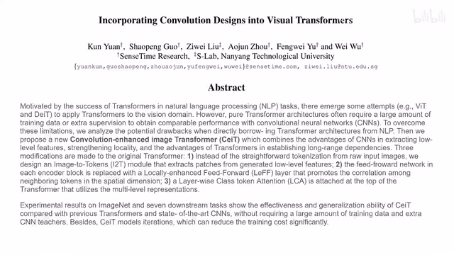
00:00:00–00:00:18 · 画面 001大家好,今天我们来快速数一篇论文 Incorporating Convolution Designs into Vision Transformers。从标题上就可以看出来，它是要把我们 Convolution 里面的一些设计，Convolution 的思想放到我们这个 Vision Transformer 里面。那么下面我们就继续来看作者是怎么样实现的。首先，本文的这个核心的贡献就是以下这个三点。
00:00:18–00:00:55 · 画面 002
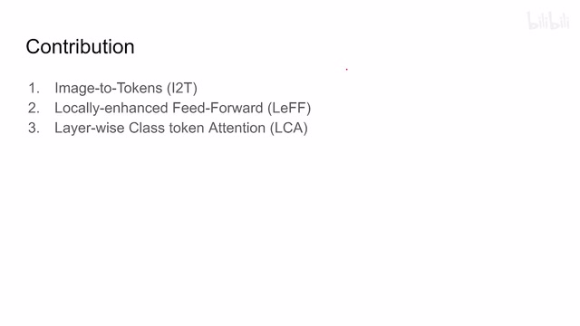
00:00:18–00:00:55 · 画面 002Image to tokens，就是我们一开始把 image 变成 token 这个环节，作者做了一定的改进。那其次呢是这个 locally enhanced feedforward这个呢，是我们 transformer encoder 里面这个 feedforward network。在这个 multi-head self-attention 后面这个原来的这个 FFN 里面。
作者呢，把它替换成这个 locally enhanced feedforward。这个呢，我们会仔细讲一下。那么最后呢，是这个 layerwise class token attention。那这里呢，是我们在得到这个最后的 classification token 之后呢。我们对所有的 token 一起集合做一个处理。
那么下面我们继续来看吧。
00:00:55–00:02:01 · 画面 003
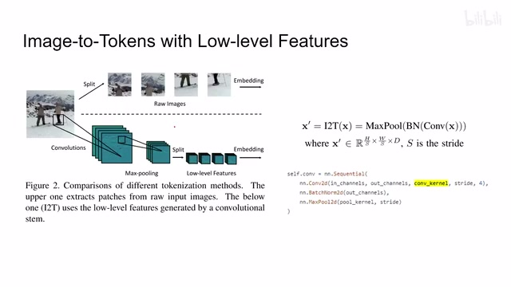
00:00:55–00:02:01 · 画面 003首先第一个 image to tokens with low-level features这一段的这个设计呢，其实是非常直接的。在原来的这个 vision transformer 里面呢。我们是把这个图像分成一个 patches。然后呢，每个 patch 直接放到这个 linear layer 里面做 embedding。
那这种设计呢，作者认为说。他并不能够很好的捕捉这些 low-level features。这 low-level features 其实呢，还是挺关键的。当然呢，vision transformer 还有另一种设计。就是把每一个 patch 放到这个 resnet50。做这个 feature 当出来这个 embedding。
这其实就是两种极端。要么就是这个 inductive bias 太过简单。另一种的 resnet50 呢，又显得过于沉重了。那么因此呢，本文提出了说。我直接就用一层的这个 convolutional layer。加上 batch normalization加上 max pooling我得到这样一个 tensor，把这个 tensor 换成 patch，然后呢送到 linear layer 里面做 embedding。这样子呢，我们得到这个 embedding，它呢既可以保证这个 low level 的 feature，同时呢又不会显得太过沉重，毕竟呢就一层 convolutional layer。所以呢，这个是本文的第一个贡献，就是 image to token 的这个模块，它做了一个优化。那么随后呢，来到本文的第二改进，这个 locally enhanced feedforward network。
00:02:01–00:03:56 · 画面 004
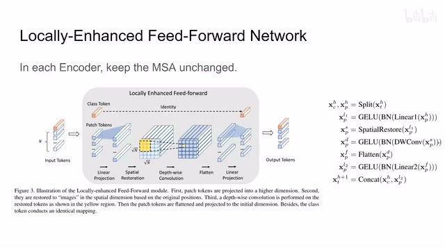
00:02:01–00:03:56 · 画面 004那这里呢，我们知道，在这个 Transformer Encoder 里面，第一层呢，它先过这个 Multi-Head Self-Attention，过完之后呢，过一个 Feed-Forward Network。那么本文呢，就是想在这个 Feed-Forward 这一块呢，加上一些 Locally Enhanced，就是把我们 Convolution 的思想给它加进来。那下面我们继续来看做的是怎么实现呢。
那首先呢,MSA 出来之后有一堆 tokens,那其中呢有一个是这个 classification token,它呢在整个过程中呢我们是保持不变的,那对于这些 patch 组成的 token 呢,跟我们之前操作一样,还是做这个 linear projection,把它的这个维度首先升起来,升起来之后呢,我们会做这个 spatial restoration,也就是说原来的我们这个 patch,它在图像中是怎么样排布的一个顺序,这里呢我们把它这个 feature 也给它还原成这样一种顺序。
那为什么做这种还原呢,是为了我们下面做一个这个 depthwise convolution,相当于我们这个 patch 的它的每一个 channel,分别给它周边的这个 patch 的这个数值呢,做这样一个 convolution,那每个 channel 每个 channel 都做,做出来呢是得到一个新的这样一个 tensor,那把这个 tensor 呢,我们再给它展成一个个 patch,最后呢每个 patch 的 representation 呢,再通过这个 linear projection,给它变回成原来的大小,那和我们的 classification token 组合起来,
就是这个 feed-forward network 这个输出了。你看到右边呢,是做着这个具体的这个层数,里面有一些 batch normalization,还有激活函数,这个呢在实现的时候可以注意一下。总的来说呢,它相对于原来的这个 feed-forward network,除了这个升维降维的过程是一样的。那重点的改动就在于用这个 depthwise convolution 替换了原来的这个 linear layer。
这是一个非常巧妙的设计,能够帮助我们把这个 patch,这个 spatial 的这个 inductive bias 给它引入来。进入到这个模型里面。这个呢就是本文最核心的一个贡献。
00:03:56–00:04:54 · 画面 005
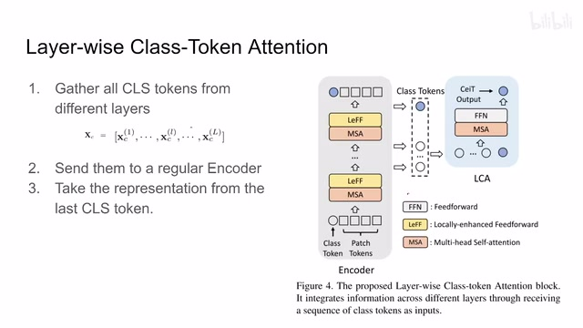
00:03:56–00:04:54 · 画面 005最后呢再看这个 layerwise class token attention。这个它的思路是非常简单。那 intuition 是说我们的这个 transformer 呢,它的每一层捕捉的这个信息呢是不一样的。因此呢每一层的这个 classification token 呢,都是有意义的。所以呢它会把所有的这个每一层的 classification token 呢,都给它收集起来。
收集起来呢,一起过一个这个经典的这个 transformer encoder 这样一个结构。就是我们最终的 representation,用来执行各种下游的任务。这个也是一个非常直白的设计，同时很自然而然的，我们想到这种设计给我们带来在这个训练上的一种好处，就是说，因为我们原来的梯度是从最顶上这一个 token 下面一步一步灌下来的，但是在这个设计中，我们这个 loss 从这里进来，它会下降到每一层，从每一层都会有一个 loss 直接的往下灌。所以说，这种设计会给我们训练的过程增加一点便利。
那么下面我们来看作者汇报的一些结果吧，首先呢，是一个标准的这个 ImageNet 的这个结果，本文的这个 CEIT 取得的性能还是相当的不错的。
00:04:54–00:05:02 · 画面 006
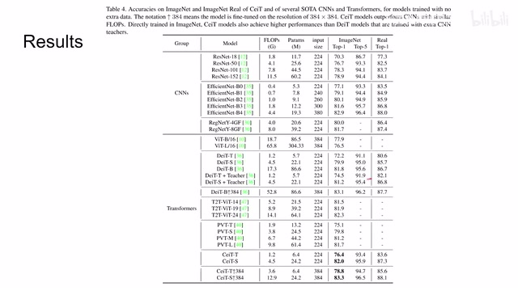
00:04:54–00:05:02 · 画面 006那么再看到 transfer learning 表现你还是可以当然我们还是最关心 ablation ablation 这一块首先是关于 image to token 的设计我们的 kernel size 怎么选 stride 怎么选要不要加 max pooling 要不要加 batch normalization 这里作者都给出了详细的 ablation 我们可以作为参考可以看到 low level feature 确实是非常关键的
00:05:02–00:05:06 · 画面 007
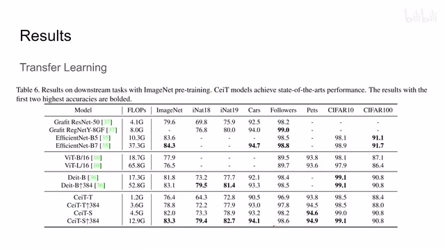
00:05:02–00:05:06 · 画面 00700:05:06–00:05:20 · 画面 008
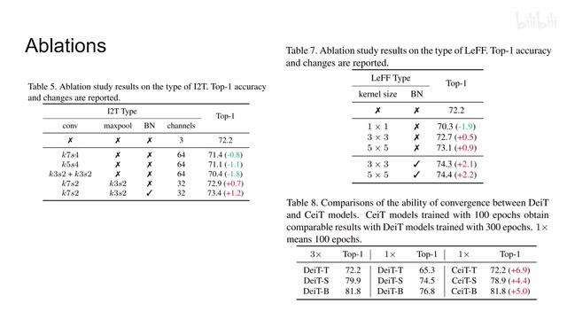
00:05:06–00:05:20 · 画面 00800:05:20–00:05:22 · 画面 009
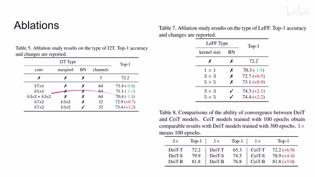
00:05:20–00:05:22 · 画面 00900:05:22–00:05:41 · 画面 010
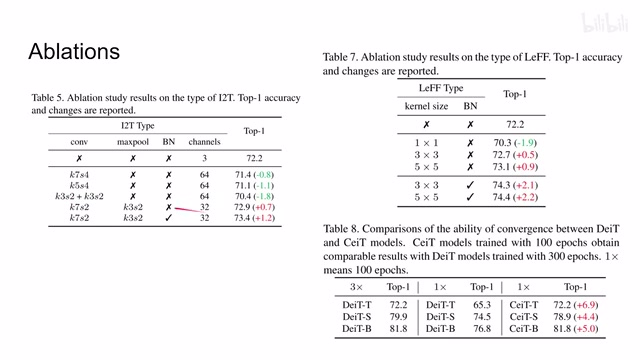
00:05:22–00:05:41 · 画面 010那么其次呢就是关于这个 locally feedforward 所以可以看到不同的这个 convolutional kernel size 还有 batch normalization 那么最后呢是作者说的这个收敛的速度那相对于 DEIT 呢本文的方法呢用 100 个 epoch 就能够取得近似的这个结果总的来说呢这篇的设计呢是非常直接的它的这个各种的设计的思路呢也是很符合直觉的很有意思的一篇工作好了那么以上就是我对这篇论文的简单分析感谢您的收看再见
00:05:41–00:05:55 · 画面 011
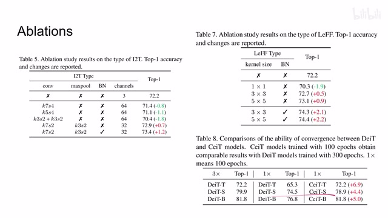
00:05:41–00:05:55 · 画面 01100:05:55–00:05:56 · 画面 012
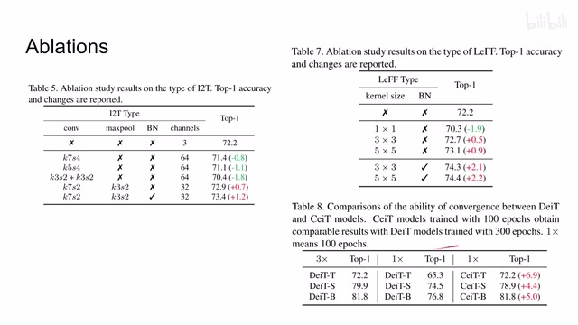
00:05:55–00:05:56 · 画面 012转写与来源说明 · 1 个自动复核提示
保留 52 个原始语音片段，1 个片段触发自动复核提示。提示仅用于定位可能的术语、重复或识别问题，不等于已确认错误。
讲解画面为源视频截图（640×360），不是可编辑 PPT 文件。全片按每秒 2 帧扫描内容变化，逐步展开页保留；连续动画保留代表画面。清晰度受源视频限制。
原视频：paper/合集_2026-10-16_新模型/[论文简析]CeiT Incorporating Convolution Designs into Visual Tr[2103.11816].mp4
SHA-256：78e41392d948ff50c7d4a289bbf4dd48e6a219a8fc950bbc610bebd4ce172385
加上 batch normalization
全文按视频语音与画面制作。原论文可从上方链接下载；完整资料包保留全文、原始逐字稿、字幕和校对记录。